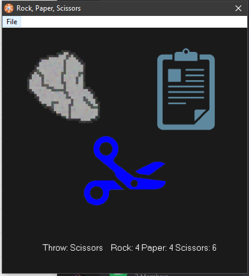
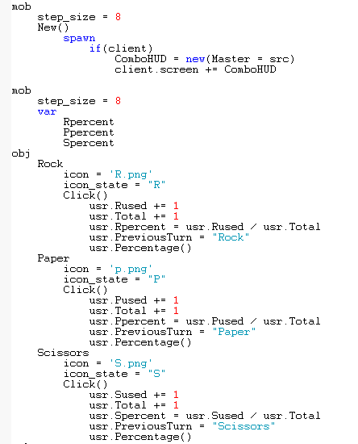
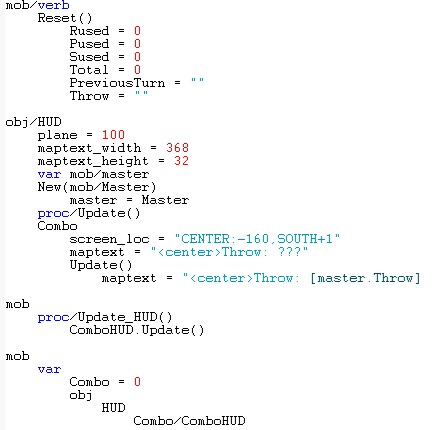
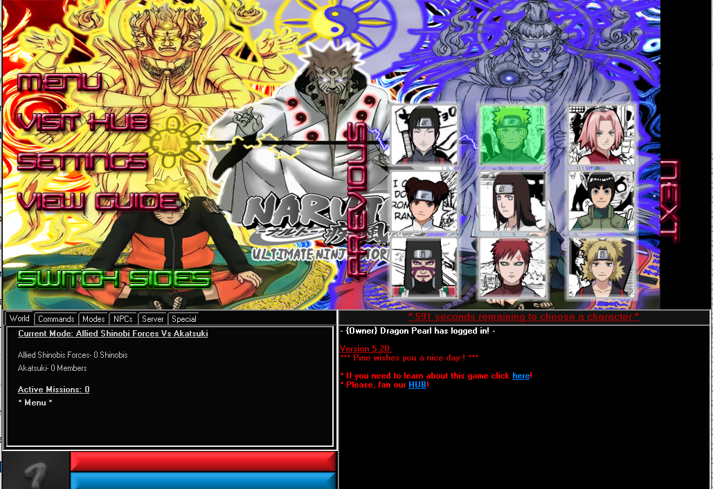
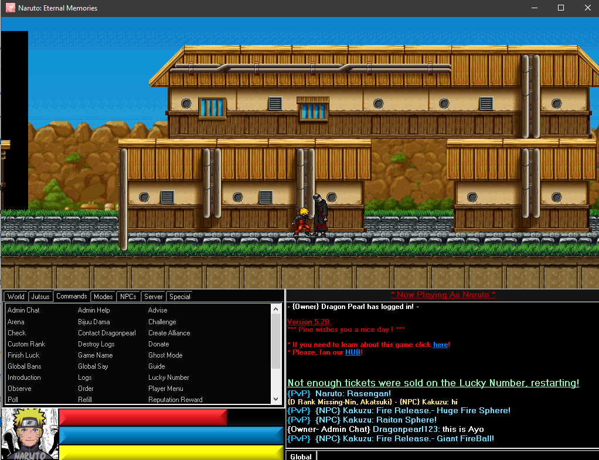
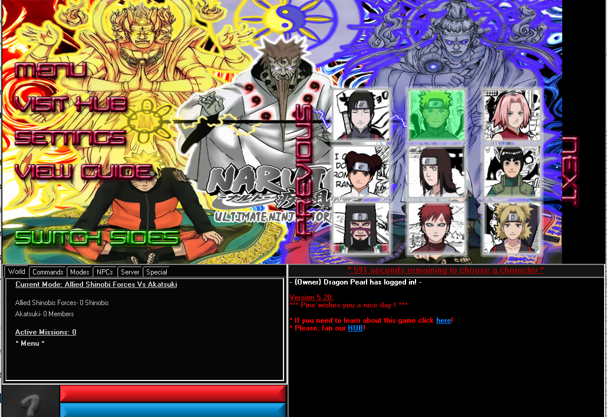
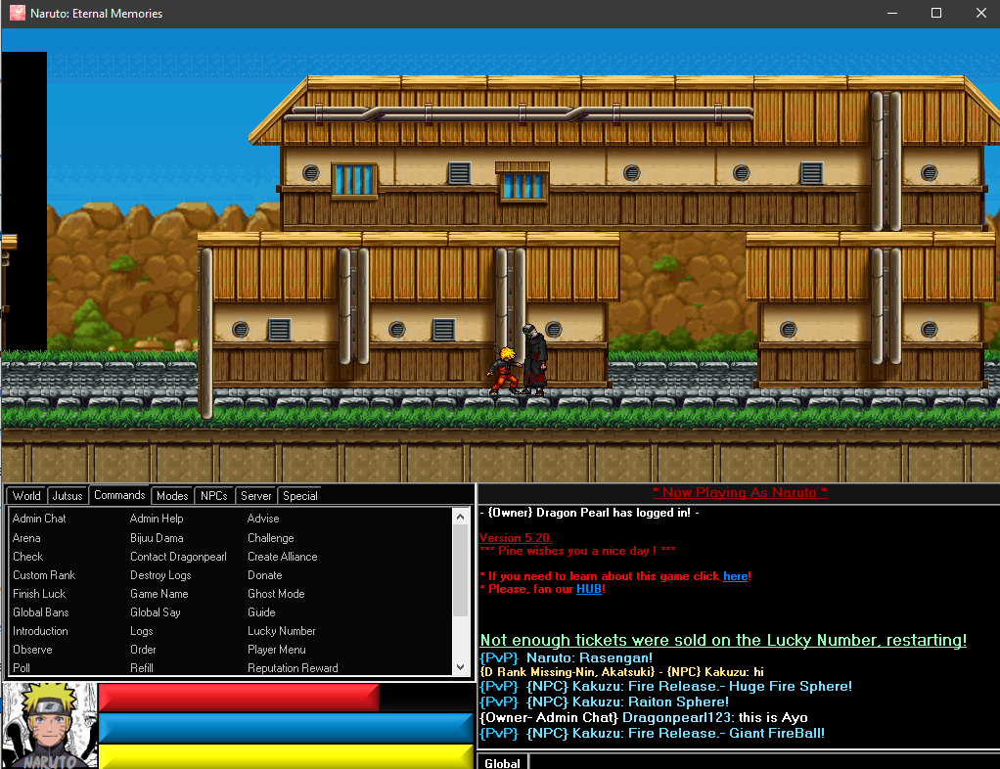

Attributes:
About Me:
“About Me”’s usually begin at the birth of the author, but I believe for a more accurate effect I should start my story where I remember it. In elementary school, a certain number of events occurred which I personally like to refer to as “life events”. Because, although these events happened at such a young age, they taught me more about the world than any other thing. This is why explaining these events is the best way to capture me as a person.
The first event was actually a phrase that was repeated throughout the school year until every student knew the chant like they knew the pledge of allegiance. The chant is as follows, “s-u-c-c-e-s-s, that's the way you spell success!”. In every situation throughout my life where I felt defeated, or I felt that the imposing challenge was impossible. I would repeat the chant over and over again in my head to overcome the obstacle. This particular event taught me that success is about having the discipline to accomplish tasks, not just being intelligent.
The second event was the first time I felt a bit of fame. In third grade, a magician performed for the entire school. For reasons only known by God, the magician picked me out from the crows to be his assistant in a magic trick. That day after the performance, people I didn’t know would come up to me and ask if it was I who was on the stage and actually wanted to talk to me. Then I learned the true value of what it means to be a celebrity. Although I never strived to be a celebrity, I respected and appreciated the impact they could have. This event made me who I am, because knowing the importance of celebrities at the young age led to me knowing the importance of connections much earlier than my classmates.
The third event, and the last event in this series is the first time I was wronged by the system. I can’t forget this day because it shook me to my core. The day started with me working on an assignment in 3rd grade, and a $5 bill dropping from a classmates pocket. When the $5 fell, I tapped the owner of the money on the shoulder and told her that her money fell. I didn’t expect praise for what I did, but what occurred next was such an infringement on justice that even 10+ years later, I still can’t completely wrap my mind around it. When I gave her the $5 back, nothing happened and I thought that was it.
Later that day at lunch, I was minding my own business when this same girl suddenly started crying at such a volume that the entire lunch hall fell quiet. Naturally, the teachers came over and asked her what was wrong. She claimed that a fellow student had hit her. When asked how hard she was hit, she proceeded to pick up an orange and smash it in. Then when they asked her who was the culprit, she pointed at me. (She really pointed me out before she smashed the orange but for a suspenseful effect I reversed the order of events). At the time, when she pointed to me it seemed like all hell would break loose. I’m screaming that I am innocent trying to clear my name, but the damage was done. Looking back, the most shocking thing wasn’t the classmate that I helped lying on me, it was the fact that the authorities got the situation WRONG. I was always told by my parents that the authorities could never be wrong and they were the absolute truth that kept the earth spinning. This event forced me to acknowledge that authorities are people who can also be fooled; even by small children. This event also taught me not to be so trusting in anybody, it really showed me that everything that happens in this world is encompassed by a rand() function. Only God knows what can happen next.
I like to play games, so I hid a quote from my favorite show in the text above.
Hint: 1-12, 3-115, 4-92, 5-6, 5-122, 5-234
Accomplishments:
Projects:



 



Comments:
Google Maps